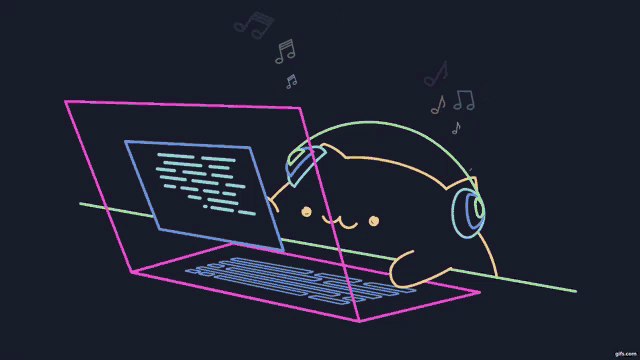

Nhut Luong
Full Stack Developer In-Training
Current Projects
In-Progress
-

ASCII_Generator.git
Simple program to accept images and convert to ASCII art.
- Visual Studio 2019
- C Sharp
Hello, my name is Nhut Minh Luong.
You stumbled onto my very first webpage. I'm currently in the MS Coding Academy training to become a full stack developer. My goal is to complete my training and find a meaningful career path creating and solving problems for a big company like Microsoft or Google. My website is bare bones but I will strive to evolve so do come back. And if you hover around you might find some things quirky on this webpage. Thanks for coming to my TED talk.
Contact Info
Nhut Minh Luong Biloxi, MS 39530 228.387.2991 nhatluong808@gmail.comLet us be friends. Send me an email to say hello.